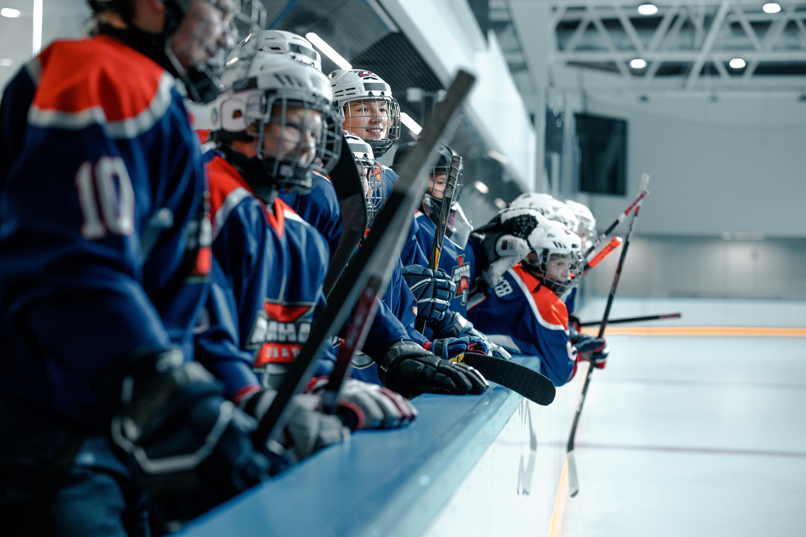

Suomessa jääkiekkoa voi alkaa harrasamaan hyvin nuorena, jopa 3-4-vuotiaana. Useilla jääkiekkoseuroilla omat kiekkokoulut, joissa lapset pääsevät tutustumaan lajiin leikinomaisesti ja turvallisessa ympäristössä. Kiekkoilun aloittaminen on helppoa, ja se tarjoaa lapsille loistavan tavan kehittää motorisia taitoja, sosiaalisia taitoja ja tiimityöskentelyä.
Aloittamiselle ei ole ikärajaa vaan myös vanhemmat ihmiset voivvat aloittaa harrastamisen seuroissa, jotka tarjoavat aikuisille suunnattuja harjoituksia. Jääkiekko on erinomainen tapa pysyä aktiivisena ja nauttia liikunnasta.

Lue lisää harrastamisen aloittamista